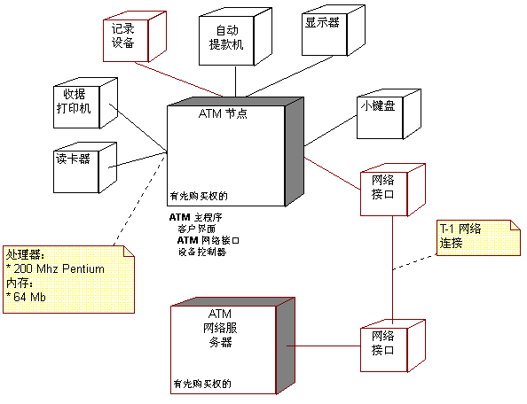

| 工件：部署模型 |

用途
关系
| 角色 | 负责人: | 修改者: |
|---|---|---|
| 任务 | 输入至:
| 输出自: |
| 流程使用情况 | ||
描述
| 主要描述 | 部署模型由一个或多个节点（至少具有一个处理器、内存并可能有其他设备的处理元素）、设备（已确定构造型的节点，这些节点在已建模的抽象级别上没有处理能力）和节点之间以及节点和设备之间的连接器组成。部署模型还将 流程映射到这些处理元素，允许表示在节点之间分发行为。 以下角色使用部署模型：
|
|---|
图示
定制
| 说明选项 | UML 说明：模型。 部署模型可能有以下属性：
部署模型通常在诸如以下所示的某个图中描绘：  部署模型对单处理器系统、或少量分发或不分发处理的简单系统是可选的。 对于具有复杂网络或处理器配置的系统是必需的。 |
|---|
© Copyright IBM Corp. 1987, 2006. All Rights Reserved. |